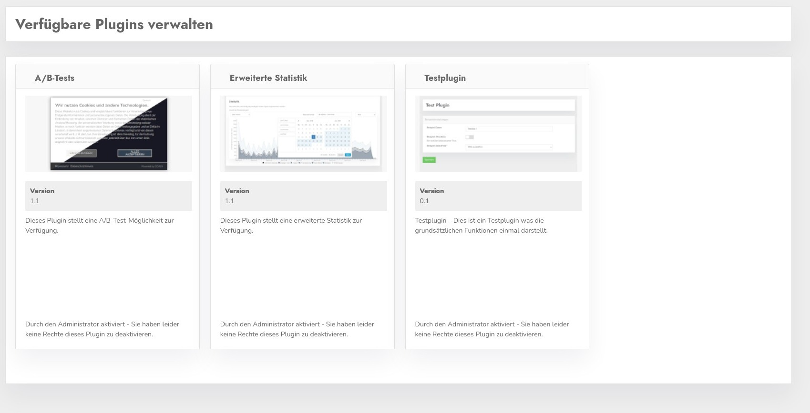

Hier finden Sie die im CCM19 verfügbaren Plugins aufgelistet auf die Sie Zugriff haben. Die meisten Standardplugins sind immer für alle freigeschaltet und können nicht separat aktiviert werden.

Falls eines der kommenden Plugins die Möglichkeit bietet dass man dieses separat pro Domain freischalten kann, hätten Sie hier diese Option.